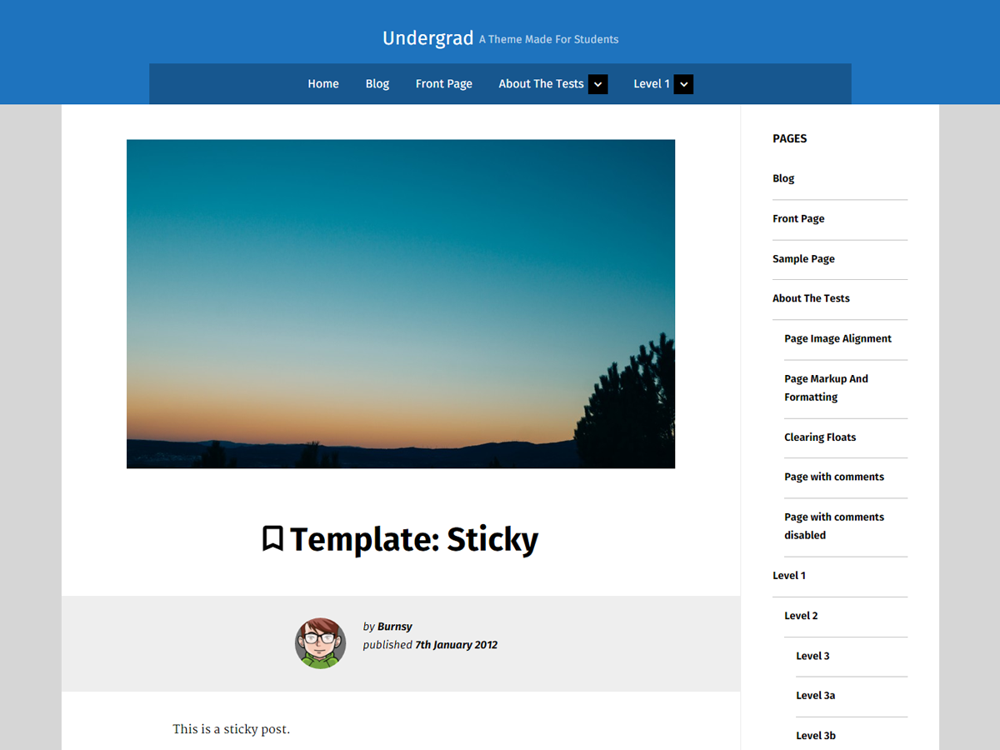

Undergrad - A Theme For students [BETA]

Live Demo
Description
This theme was created for students who could cannot afford a professional theme for Word Press, so with the effort of students to create the theme. It has the possibility to add to your portfolio if you commit to the project!
Installation
- Download the theme by clicking here.
- In your admin panel, go to Appearance > Themes and click the Add New button.
- Click Upload and Choose File, then select the theme's .zip file. Click Install Now.
- Download WP-SCSS from By Connect Think.
- Click Activate Plugin
- Hover over settings and click WP-SCSS
- Set SCSS location to "/scss/"
- Set CSS location to "/"
- Set Compiling Mode to compressed
- Hover over appearance click Themes
- Activate Undergrad
- Open Customise and Edit Away!
Upcoming Features
- Dark mode!
- Custom Widgets
- More Customization Options
- Finishing of Portfolio
- Think of More Ideas
Frequently Asked Questions
Does this theme support any plugins?
Undergrad includes support for Infinite Scroll in Jetpack.
Can I edit the theme?
Yes! Help make Undergrad better for other students by helping make the theme bigger and better.
I noticed a error what do I do?
Open a issue on https://github.com/Burnsyy/Undergrad/issues
Changelog
1.0 - 26/02/2016
- Initial release
Credits
- Based on Underscores http://underscores.me/, (C) 2012-2015 Automattic, Inc., GPLv2 or later
- normalize.css http://necolas.github.io/normalize.css/, (C) 2012-2015 Nicolas Gallagher and Jonathan Neal, MIT
- Material Design Iconic Font http://zavoloklom.github.io/material-design-iconic-font/, Created by Sergey Kupletsky, CC4
- SASS http://sass-lang.com/